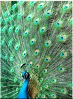
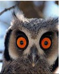
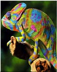

巴拉巴拉巴拉
“老虎”一般企圖心強烈，喜歡冒險，個性積極，競爭力強，凡事喜歡掌控全局發號施令，不喜歡維持現狀，但行動力強，目標一經確立便會全力以赴。它的缺點是在決策上較易流於專斷，不易妥協，故較容易與人發生爭執摩擦。如果下屬中有“老虎”要給予他更多的責任，他會覺得自己有價值，佈置工作時注意結果導向，如果上司是老虎則要在他面前展示自信果斷的一面，同時避免在公衆場合與他唱反調。中外名人中毛澤東、朱鎔基以及前英國首相柴契爾夫人爲較典型的老虎型，德國爲老虎型人數最多的國家。
有自信，夠權威，決斷力高，競爭性強，胸懷大志，喜歡評估。
企圖心強烈，喜歡冒險，個性積極，競爭力強，有對抗性。
善於控制局面並能果斷地作出決定的能力；用這一類型工作方式的人成就非凡。
當感到壓力時，這類人就會太重視迅速的完成工作，就容易忽視細節，他們可能不顧自己和別人的情感。由於他們要求過高，加之好勝的天性，有時會成爲工作狂。
具備高支配型特質，競爭力強、好勝心盛、積極自信，是個有決斷力的組織者。他胸懷大志、勇於冒險、分析敏銳，主動積極且具極爲強烈的企圖心，只要認定目標就勇往直前，不畏反抗與攻訐，誓要取得目標的傢夥。
老虎型領導人都傾向以權威作風來進行決策，當其部屬者除要高度服從外，也要有冒險犯難的勇氣，爲其殺敵闖關。
老虎型族人最適合開創性與改革性的工作，在開拓市場的時代或需要執行改革的環境中，最容易有出色的表現。
宏碁集團的施振榮和前美國GE總裁韋爾奇 (Jack Welch)等，都是老虎型領導人。

“孔雀”熱情洋溢，好交朋友，口才流暢，重視形象，擅于人際關係的建立，富同情心，最適合人際導向的工作。缺點是容易過於樂觀，往往無法估計細節，在執行力度上需要高專業的技術精英來配合。對孔雀要以鼓勵爲主給他表現機會保持他的工作激情，但也要注意他的情緒化和防止細節失誤。孫中山、克林頓、雷根、戈巴契夫都是這一類型的人，美國是孔雀型人最多的國家。
很熱心，夠樂觀，口才流暢，好交朋友，風度翩翩，誠懇熱心。熱情洋溢、好交朋友、口才流暢、個性樂觀、表現慾強。
此類型的人生性活潑。能夠使人興奮，他們高效地工作，善於建立同盟或搞好關係來實現目標。他們很適合需要當衆表現、引人注目、態度公開的工作。
因其跳躍性的思考模式，常無法顧及細節以及對事情的完成執著度。
孔雀百利具有高度的表達能力，他的社交能力極強，有流暢無礙的口才和熱情幽默的風度，在團體或社群中容易廣結善緣、建立知名度。孔雀型領導人天生具備樂觀與和善的性格，有真誠的同情心和感染他人的能力，在以團隊合作爲主的工作環境中，會有最好的表現。
孔雀型領導人在任何團體內，都是人緣最好的人和最受歡迎的人，是最能吹起領導號角的人物。 當孔雀型領導人的部屬者，除要能樂於在團隊中工作外，還要對其領導謙遜得體，不露鋒、不出頭，把一切成功光華都讓與領導。 孔雀型領導人，不宜有個老虎型領導人當二把手或部屬。
反之，若老虎型領導人有個孔雀型的人甘願當其二把手，則會是最佳搭配。孔雀型的人天生具有鼓吹理想的特質，在推動新思維、執行某種新使命或推廣某項宣傳等任務的工作中，都會有極出色的表現。 他們在開發市場或創建産業的工作環境中，最能發揮其所長。
“無尾熊”屬於行事穩健，不會誇張強調平實的人，性情平和對人不喜歡製造麻煩，不興風作浪，溫和善良，在別人眼中常讓人誤以爲是懶散不積極，但只要決心投入，絕對是“路遙知馬力”的最佳典型。對考拉要多給予關注和溫柔想方設法挖掘他們內在的潛力。印度的甘地、蔣經國、宋慶齡都是此類型的人，一般而言，宗教信仰者都是“無尾熊”，而中國正是無尾熊型最多的搖籃。
很穩定，夠敦厚，溫和規律，不好衝突。行事穩健、強調平實，有過人的耐力，溫和善良。
他們對其他人的感情很敏感，這使他們在集體環境中左右逢源。
很難堅持自己的觀點和迅速做出決定。一般說來，他們不喜歡面對與同事意見不和的局面，他們不願處理爭執。
無尾熊型工作風格的主要行爲：面部表情和藹可親；說話慢條斯理，聲音輕柔；用贊同型、鼓勵性的語言；辦公室裏擺有家人的照片。
無尾熊具有高度的耐心。他敦厚隨和，行事冷靜自持；生活講求律規但也隨緣從容，面對困境，都能泰然自若。
無尾熊型領導人，適宜當安定內部的管理工作，在需要專業精密技巧的領域，或在氣氛和諧且不具趕迫時間表等的職場環境中，他們最能發揮所長。當企業的産品穩踞市場時，無尾熊型的企業領導人是極佳的總舵手。但當企業還在開拓市場的時候，老虎型或孔雀型的人似乎較佔優勢。
或許，勇於開疆辟土的老虎型的人當一哥， 配以與人爲善的無尾熊型人當二把手，也是好的搭配。 無尾熊型領導人強調無爲而治，能與周圍的人和睦相處而不樹敵，是極佳的人事領導者，適宜在企業改革後，爲公司和員工重建互信的工作。又由於他們具有高度的耐心性，有能力爲企業賺取長遠的利益，或爲公司打好永續經營的基礎。

“貓頭鷹”傳統而保守，分析力強，精確度高是最佳的品質保證者，喜歡把細節條例化，個性拘謹含蓄，謹守分寸忠於職責，但會讓人覺得“吹毛求疵”。“貓頭鷹”清晰分析道理說服別人很有一套，處事客觀合理，只是有時會鑽在牛角尖裏拔不出來。古代斷案如神的包拯（包青天）正是此種類型的典範。日本是這個類型人數較多的國家。
很傳統，注重細節，條理分明，責任感強，重視紀律。保守、分析力強，精准度高，喜歡把細節條例化，個性拘謹含蓄。
天生就有愛找出事情真相的習性，因爲他們有耐心仔細考察所有的細節並想出合乎邏輯的解決辦法。
把事實和精確度置於感情之前，這會被認爲是感情冷漠。在壓力下，有時爲了避免做出結論，他們會分析過度。
貓頭鷹型工作風格的主要行爲：很少有面部表情； 動作緩慢；使用精確的語言、注意特殊細節；辦公室裏掛有圖表、統計數位等。
貓頭鷹斯諾具有高度精確的能力，其行事風格，重規則輕情感，事事以規則爲準繩，並以之爲主導思想。 他性格內斂、善於以數位或規條爲表達工具而不大擅長以語言來溝通情感或向同事和部屬等作指示。 他行事講究條理分明、守紀律重承諾，是個完美主義者。
架構穩定和制度健全的組織最好聘用貓頭鷹型的人來當各級領導人，因爲貓頭鷹型領導人喜歡在安全架構的環境中工作，且其表現也會最好。其行事講究制度化，事事求依據和規律的習性，極爲適合事務機構的行事方式。然而，當企業需要進行目標重整、結構重組、流程變革時，貓頭鷹型領導人就會産生迷失，不知如何處事，也不知如何自處。對改革行動，上者會先保持觀望的態度，再慢慢適應新的局面；中者也會先保持觀望的態度，然後呈辭求去；下者則會結集反對力量，公然表示反對或隱晦地從事反對等的行爲。
又由於貓頭鷹型人的行事決策風格，是以資料和規則爲其主導思想，其直覺能力和應變能力都偏低，隨而創造和創新能力也相對地弱，因而不宜擔任需要創建或創新能力的任務。組織完善和發展安定的企業，宜用貓頭鷹型企管人當家。
他們尊重傳統、重視架構、事事求據喜愛工作安定的性格，是企業安定力量的來源。然而，由於他們行事講究制度化，事事求依據和規律，故會將細節條例化，事事檢查以求正確無誤，甚至爲了辦事精確，不惜對人吹毛求疵或挑剔別人的錯誤，以顯現自己一切照章辦事的態度和求取完美的精神，不易維持團隊內的團結精神和凝聚力。

“變色龍”中庸而不極端，凡事不執著，韌性極強，擅于溝通是天生的談判家，他們能充分融入各種新環境新文化且適應性良好，在他人眼中會覺得他們“沒有個性”，故“沒有原則就是最高原則”，他們懂得凡事看情況看場合。前總理周恩來、美國前國務卿基辛格、諸葛亮都是這種類型。香港和臺灣是變色龍較多的地區。
善於在工作中調整自己的角色去適應環境，具有很好的溝通能力。
從別人眼中看變色龍族群，會覺得他們較無個性及原則。
綜合老虎、孔雀、無尾熊、貓頭鷹的特質，看似沒有凸出個性，但擅長整合內外資；沒有強烈的個人意識形態，是他們處事的價值觀。
變色龍具有高度的應變能力。他性格善變，處事極具彈性，能爲了適應環境的要求而調整其決定甚至信念。
變色龍型的領導人，是支配型、表達型、耐心型、精確型四種特質的綜合體，沒有突出的個性，擅長整合內外資訊，相容並蓄，不會與人爲敵，以中庸之道處世。他們處事圓融，彈性極強，處事處處留有餘地，行事絕對不會走偏鋒極端，是一個辦事讓你放心的人物。
然而，由於他們以善變爲其專長，故做人不會有什麽立場或原則，也不會對任何人有效忠的意向，是個馮道式的人物。部屬會難以忍受其善變和不講原則的行爲；當他們上司者，則會日夜擔心不知何時會遭其「出賣」。
變色龍既沒有凸出的個性，對事也沒有什麽強烈的個人意識型態，事事求中立並傾向站在沒有立場的位置，故在衝突的環境中，是個能遊走折中的高手。由於他們能密切地融合於各種環境中，他們可以為企業進行對內對外的各種交涉，只要任務確實和目標清楚，他們都能恰如其分地完成其任務。